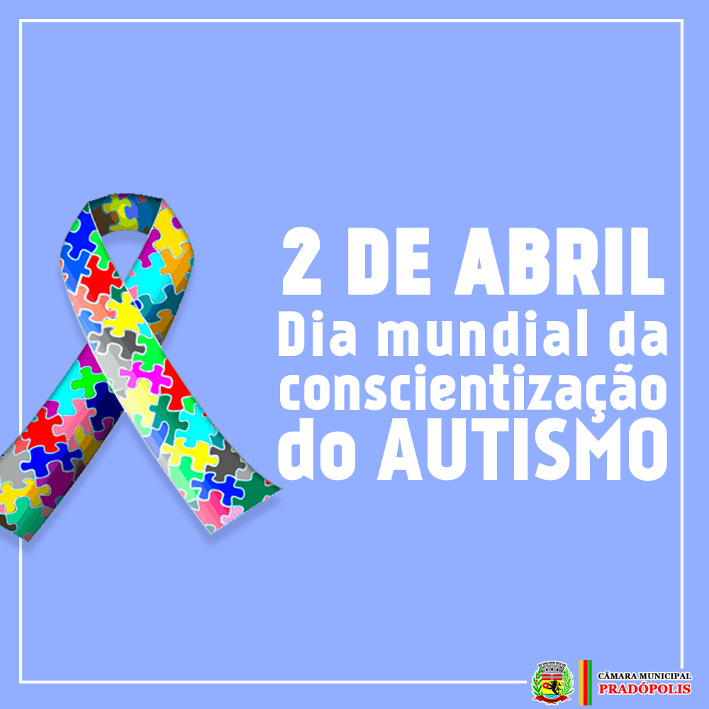
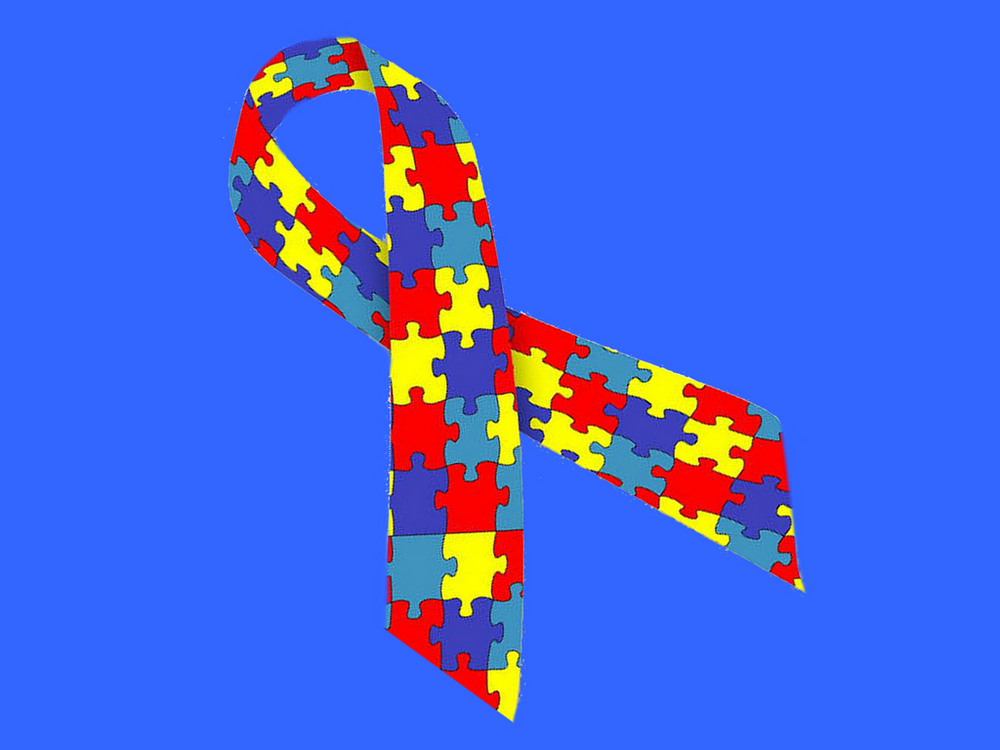

Conscientização sobre o Autismo!!
O Dia Mundial de Conscientização sobre o Autismo foi estabelecido em 2007 pelas Nações Unidas e, desde então, vem sendo celebrado como forma de aumentar a conscientização relacionada a todos os aspectos do transtorno do espectro do autismo (TEA).

A conscientização sobre o autismo ajuda a combater estereótipos, preconceitos e discriminação, criando um ambiente mais acolhedor e respeitoso.
A data, estabelecida em 2.007, tem por objetivo difundir informações para a população sobre o autismo e assim reduzir a discriminação e o preconceito que cercam as pessoas afetadas pelo transtorno.
Os transtornos do espectro autista (TEAs) aparecem na infância e tendem a persistir na adolescência e na idade adulta. Na maioria dos casos, eles se manifestam nos primeiros 5 anos de vida. As pessoas afetadas pelos TEAs frequentemente têm condições comórbidas, como epilepsia, depressão, ansiedade e transtorno de déficit de atenção e hiperatividade. O nível intelectual varia muito de um caso para outro, variando de deterioração profunda a casos com altas habilidades cognitivas.
Embora algumas pessoas com TEAs possam viver de forma independente, existem outras com deficiências severas que precisam de atenção e apoio constante ao longo de suas vidas. As intervenções psicossociais baseadas em evidência, tais como terapia comportamental e programas de treinamento para pais, podem reduzir as dificuldades de comunicação e de comportamento social e ter um impacto positivo no bem-estar e na qualidade de vida de pessoas com TEAs e seus cuidadores. As intervenções voltadas para pessoas com TEAs devem ser acompanhadas de atitudes e medidas amplas que garantam que os ambientes físicos e sociais sejam acessíveis, inclusivos e acolhedores.
Sintomas:
De acordo com o quadro clínico, os sintomas podem ser divididos em 3 grupos:
– ausência completa de qualquer contato interpessoal, incapacidade de aprender a falar, incidência de movimentos estereotipados e repetitivos, deficiência mental;
– o paciente é voltado para si mesmo, não estabelece contato visual com as pessoas nem com o ambiente; consegue falar, mas não usa a fala como ferramenta de comunicação (chega a repetir frases inteiras fora do contexto) e tem comprometimento da compreensão;
– domínio da linguagem, inteligência normal ou até superior, menor dificuldade de interação social que permite levar a vida próxima do normal.
Tratamento:
O autismo é um transtorno crônico mas que conta com esquemas de tratamento que devem ser introduzidos tão logo seja feito o diagnóstico e aplicados por equipe multidisciplinar. Envolve a intervenção de médicos, psicólogos, fonoaudiólogos, pedagogos, fisioterapeutas, terapeutas ocupacionais e educadores físicos, além da imprescindível orientação aos pais ou cuidadores. É altamente recomendado que uma equipe multidisciplinar avalie e desenvolva um programa de intervenção personalizado, pois nenhuma pessoa com autismo é igual a outra
Diga sim ao dia da Conscientização sobre o Autismo pessoas com o transtorno (TEAs) não são loucas.
